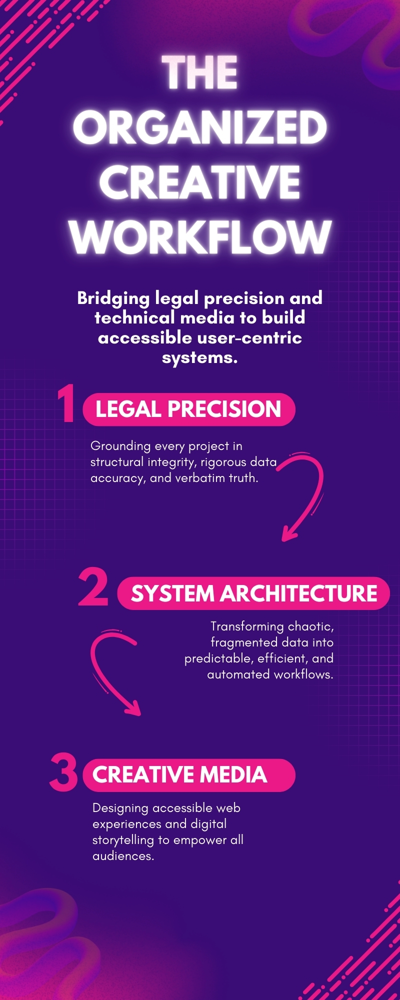

The Organized Creative:
Architecting Information for the Greater Good
For me, meaningful work is not defined by simply completing tasks or checking boxes; it is a calling to bring order to chaos. In the modern digital landscape, audiences are consistently overwhelmed by fragmented data, misaligned communication, and inaccessible systems. My professional calling is to operate as an "Organized Creative," bridging the gap between rigorous legal precision and dynamic technical media to architect efficient, equitable information workflows. As noted by the authors of Make Your Job a Calling, approaching work as a calling requires aligning personal values with a broader, outward-facing purpose. My primary purpose is organizational clarity: ensuring that complex information is not only accurate but fundamentally accessible to the people who need it most.
This philosophy is the cohesive thread that unites my background in paralegal studies, systems automation, and multimedia production. A foundational principle of any professional philosophy is that a practitioner must successfully ground their professional actions in their core values. My core value is structural integrity. Whether I am drafting a legal document, engineering a bot-assisted workforce management tool, or designing a digital media campaign, the end goal remains identical: to build a predictable, user-centric system. Media creation and web design are simply the visual delivery mechanisms for highly organized information. As illustrated in the Information Architecture Workflow (Figure 1), true communication only occurs when technical accuracy is paired with empathetic, human-centered design. I hand-coded my portfolio website from scratch specifically to demonstrate this synthesis of backend organization and frontend usability.
Ultimately, my approach to work is deeply tied to digital equity and inclusion. Serving the greater good in corporate and media environments means breaking down the barriers of confusing jargon, poor website architecture, and disorganized data. Creating truly inclusive environments requires a commitment to working toward achieving equity by removing informational roadblocks for all distinct users. By operating as an "Organized Creative," I strive to build systems and stories that empower audiences, streamline operations, and prove that strict legal precision and creative media are not opposing forces, but necessary partners in modern communication.
